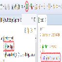

WinPythonの入手
Windows環境のPythonにWinPythonというものがある。
WinPythonのダウンロード先
WinPythonはUSBでも持ち運び可能とのこと。
管理者権限なしでWindowsにインストールできる。
インストールはウィザードに適当に従うだけでよい。
Spyder.exeがPythonのIDE（開発環境）となっている。
EclipseプラグインPyDevのインストールおよびインタプリタにWinpythonを設定
EclipseとWinpythonはインストール済みとする。
PC情報
Windows7 64bit
Eclipseの情報
Eclipse for PHP Developers
Version: Neon.2 Release (4.6.2)
PyDevをEclipseへインストール
- Eclipeをオープン。
- Help → Install New software と操作し、install画面を表示する。
-
install画面の「Work with」 テキストボックスに「http://pydev.org/updates」を入力してEnter。
- 一覧でPyDevにチェックを入れてNextボタンを押すとインストールが始まる。
- インストール中に同意画面が表示されたら同意にチェックをいれて続行する。
- さらに続行確認画面が表示されたら、上記の一覧にチェックをいれて続行する。
PyDevのインタプリタにWinpythonを指定する
- Window → Preferences → PyDev → Interpreters → Python Interpreter と操作してPython Interpreters画面を表示させる。
- Interpreter Name には任意の名前を入力する。（例：winpython3_6)
-
Interpreter Executableには、WinPythonをイントールしたフォルダのどこかに存在するpython.exeを指定する
（例：C:\python\WinPython-64bit-3.6.0.1Qt5\python-3.6.0.amd64\python.exe）
- OKを押すと設定処理が始まるのでしばらく待つ。
-
下記の画面が表示されたらOK。
新しくPythonプロジェクトを立ち上げてHello world
-
File→New→Other→PyDev→PyDev Project と操作しプロジェクト名を入力すると新プロジェクトが作成される。
- 新プロジェクトを右クリック→New→Other→PyDev→PyDev &Moduleと操作し、ファイル名を入力するとpyファイルが作成される。(pyファイル名を入力する際、拡張子のpyを入力する必要はない）
- pyファイルを開き、「print("Hello World!")」を入力する。
-
上段の実行ボタン（緑右矢印ボタン）を押すと実行される。

- コンソールにHello World!と表示されたら成功。
PyDevでPythonのインタプリタを動かす
-
コンソールビューを開く（Windows → Show View → Console)
-
コンソールビューの右上にある↓アイコンから PyDevConsole を選択する。
-
いくつか選択肢があるが「Jython using VM running Eclipse consoke」にチェックを入れてOKボタンを押す。
-
以上でコンソール内をインタプリタとして動かすことができる。
配列とスライシングの検証
Pythonには配列中から特定の要素をまとめて取得するスライシングというのが存在する。
スライシングで取得する配列は参照ではなく複製である。
arr1 = [3,4,5,6,7]
print (arr1)
# スライシングの検証。参照ではなく複製である。
arr2 = arr1[2:4]
print (arr2)
arr2[1] = 99
print (arr2)
print (arr1)
出力
[3, 4, 5, 6, 7]
[5, 6]
[5, 99]
[3, 4, 5, 6, 7]
Pythonの連想配列、ディクショナリ
# ディクショナリの検証
dic = {'neko':'猫'}
dic['neko'] = 'ネコ'
dic['dog'] = 'イヌ'
print(dic)
# print(dic['kani']) # エラーになる KeyError
# ディクショナリのループ
for i in dic:
print(dic[i])
出力
{'neko': 'ネコ', 'dog': 'イヌ'}
ネコ
イヌ
xxx
- ホーム
- プログラミングの覚書
- JavaScriptの覚書
- Pythonの覚書